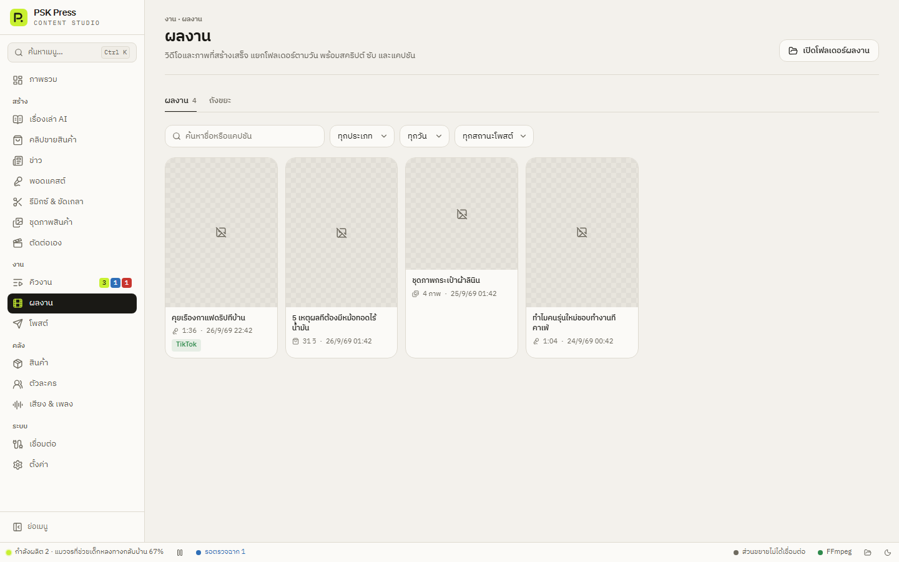

งาน
ผลงาน
วิดีโอและชุดภาพที่สร้างเสร็จทั้งหมด — ค้นหา ดู แก้แคปชัน โพสต์ สร้างซ้ำ และกู้คืนจากถังขยะ


ค้นหาและกรอง
- ค้นหา — ชื่อหรือแคปชัน
- ประเภท — เรื่องเล่า, คลิปสินค้า, ข่าว, พอดแคสต์, รีมิกซ์, ขัดเกลา, ชุดภาพ
- วันที่ — ทุกวัน / วันนี้ / 7 วัน / 30 วัน
- สถานะโพสต์ — ยังไม่โพสต์ / โพสต์แล้ว
เปิดโฟลเดอร์ผลงาน มุมขวาบนเปิดโฟลเดอร์ใน File Explorer
เลือกหลายรายการ
ชี้ที่การ์ดแล้วติ๊กช่องเลือก แถบด้านบนจะมี โพสต์ (ไปหน้าโพสต์พร้อมรายการที่เลือก) ลบ (ย้ายไปถังขยะ กดเลิกทำได้) และ ยกเลิก
รายละเอียดงาน
คลิกการ์ดเพื่อเปิด:
- เล่นวิดีโอ หรือดูภาพทั้งชุด และเปลี่ยนชื่อได้
- แคปชัน — แก้ได้ (บันทึกเมื่อคลิกออก) คัดลอก หรือ เขียนใหม่ ให้ AI เขียนแคปชันใหม่
- ประวัติการโพสต์ — โพสต์ไปที่ไหน เมื่อไร
- ปุ่ม โพสต์ เปิดโฟลเดอร์ สร้างซ้ำ (สร้างงานใหม่ด้วยค่าเดิม) บันทึก (ดูบันทึกงาน) ลบ
- ไฟล์ประกอบ — ภาพฉาก คลิป เสียง ของงานนั้น
ถังขยะ
แท็บ ถังขยะ เก็บงานที่ลบ กด กู้คืน เพื่อเอากลับ หรือ ลบถาวรทั้งหมด (ย้อนกลับไม่ได้ แอปจะถามก่อน)